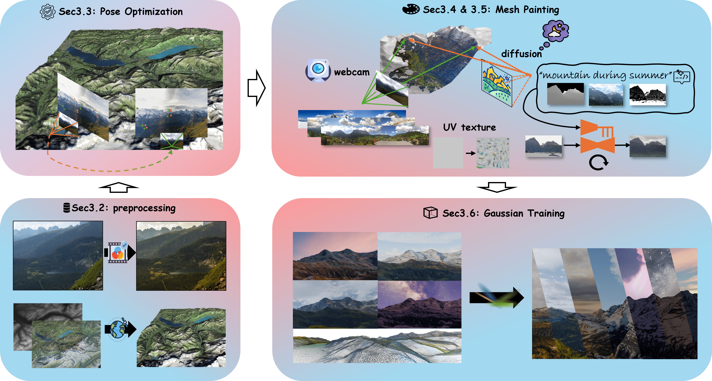
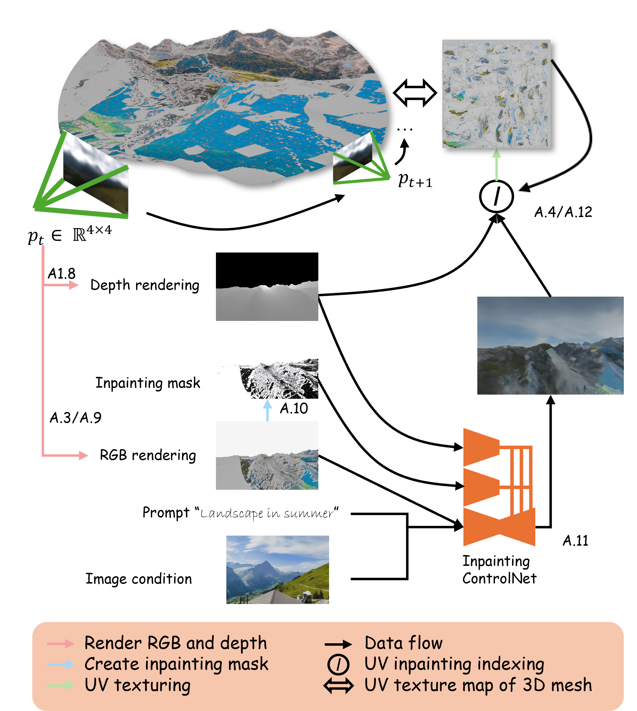
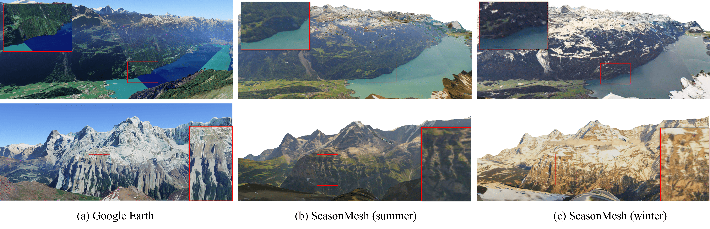

SeasonScapes Paper
3D-Landschaften mit saisonalen Variationen aus spärlichen Webcam-Bildern
Timo Kleger, Qi Ma, Deheng Zhang, Luc Van Gool, Danda Pani Paudel

Abstract
Wir stellen das SeasonScapes-Framework und den SeasonScapes-Datensatz vor: Swiss Sparse-view Mountain Scenes with Seasonal Changes, der über 50 km × 60 km abdeckt und aus mehr als 85'000 Webcam-Bildern von 32 verschiedenen Standorten über 13 Zeitpunkte eines ganzen Jahres besteht. Durch die Projektion dieser zeitpunktspezifischen Bilder auf ein 3D-Mesh konstruieren wir saisonale 3D-Landschaften, die natürliche Erscheinungsveränderungen über die Zeit widerspiegeln. Um Verdeckungen und fehlende Daten zu behandeln, nutzen wir konditionierte Diffusionsmodelle für bildgeführtes Inpainting direkt auf dem Mesh. Die fertiggestellten Meshes lassen sich anschliessend mit einem standardmässigen physikalisch basierten Renderer neu beleuchten.
Hauptmerkmale
1. SeasonScapes Dataset
Das Herzstück dieses Projekts ist ein umfangreiches Dataset mit Schweizer Berglandschaften. Es umfasst über 50 km × 60 km Gelände und 85.000 Bilder von 32 verschiedenen Webcam-Standorten, aufgenommen über 13 Zeitstempel im Laufe eines Jahres. Dies ermöglicht es, saisonale Variationen und zeitliche Veränderungen zu erfassen.
2. Saisonale 3D-Rekonstruktion
Der Algorithmus projiziert zeitgestempelte Bilder auf 3D-Netze, um temporalbewusste Landschaften zu konstruieren. Diese Methode erfasst nicht nur die räumliche Geometrie, sondern auch die Veränderungen der Landschaft über die Jahreszeiten hinweg - von grünen Sommerlandschaften bis zu schneebedeckten Winterszenen.

3. Diffusion-basiertes Inpainting
Bedingte Diffusionsmodelle werden eingesetzt, um fehlende Bereiche in den Bildern zu ergänzen. Dies ist besonders wichtig, da Verdeckungen durch andere Objekte oder Bereiche außerhalb des Sichtfeldes entstehen können. Die KI-gestützte Inpainting-Methode füllt diese Lücken intelligent auf, basierend auf den umgebenden Kontextinformationen.

Algorithmus
Das Training besteht aus zwei Phasen: einer Paint-Phase, die gültige Flächen des 3D-Netzes aus den Webcam-Aufnahmen texturiert, und einer Inpaint-Phase, die fehlende Bereiche mithilfe eines bedingten Diffusionsmodells direkt auf dem Netz ergänzt.
Ergebnisse
Wir evaluieren die Rekonstruktionsqualität für drei Schweizer Regionen anhand der Standardmetriken LPIPS, PSNR und SSIM. Die Zahl in Klammern gibt die Anzahl der Evaluationsansichten je Region an.
| Region | LPIPS↓ | PSNR↑ | SSIM↑ |
|---|---|---|---|
| Grindelwald (54) | 0.159 | 20.56 | 0.86 |
| Jungfrau (674) | 0.191 | 18.58 | 0.831 |
| Bern high (168) | 0.216 | 19.20 | 0.804 |

Fazit
SeasonScapes demonstriert die Kraft der Kombination von klassischer Computergrafik mit modernen Deep Learning Techniken. Durch die Nutzung von großflächigen Webcam-Daten und innovativen Methoden zur Bildvervollständigung ist es möglich, beeindruckende 3D-Rekonstruktionen von natürlichen Landschaften zu erstellen, die nicht nur räumlich genau sind, sondern auch die zeitlichen Variationen erfassen.
Anwendungen
Dieses Projekt hat zahlreiche potenzielle Anwendungen:
- Digitale Archivierung von Naturlandschaften
- Klimaforschung und Überwachung von Umweltveränderungen
- Immersive VR- und Augmented Reality-Anwendungen
- Film und Entertainment Industry
- Architektur- und Tourismusplanung
Das Paper ist auf arXiv verfügbar und stellt einen wichtigen Beitrag zur Schnitttstelle von Computer Vision, 3D-Rekonstruktion und generativen Modellen dar.